Personal Projects
Built outside of work — products and automations I own end-to-end.
Mooder
Team emotion tracker for managers running multiple squads. A manager spins up teams with their own cadence (weekly / bi-weekly), language (PL / EN) and industry context — each cycle generates an anonymous survey link that members fill in three times (start, middle, end). The dashboard renders per-member mood lines plus team average, and an AI layer writes two summaries per cycle: a team-level read of what's driving the mood and an individual paragraph for each anonymous member with concrete signals. Built to make remote team wellbeing observable without 1:1s.
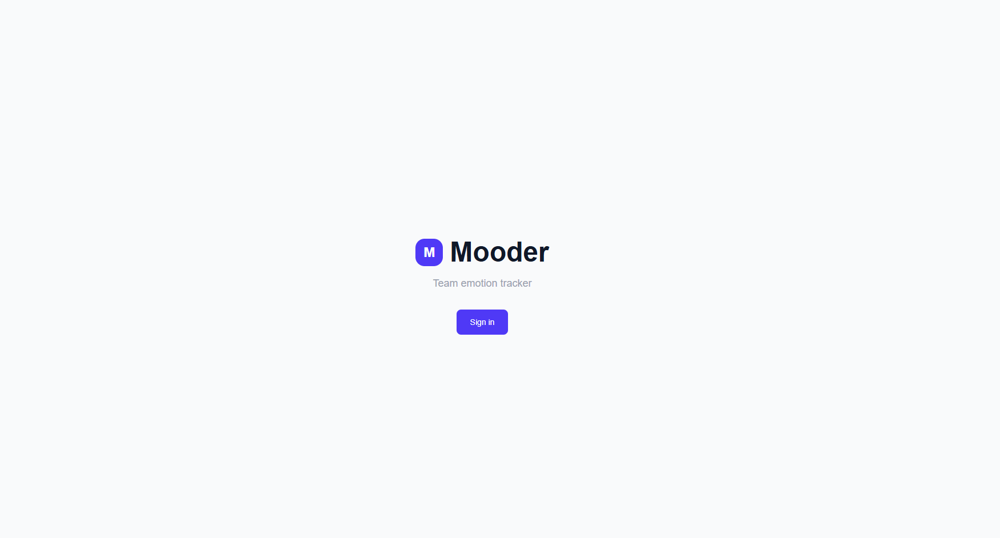
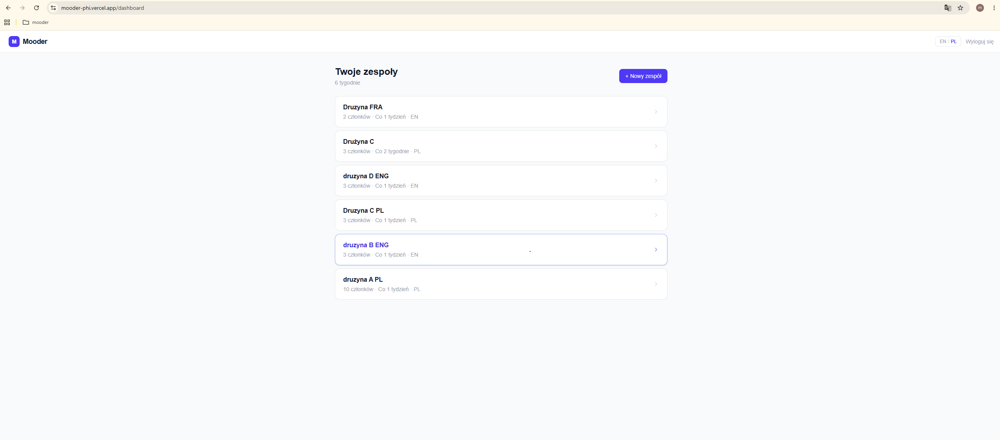
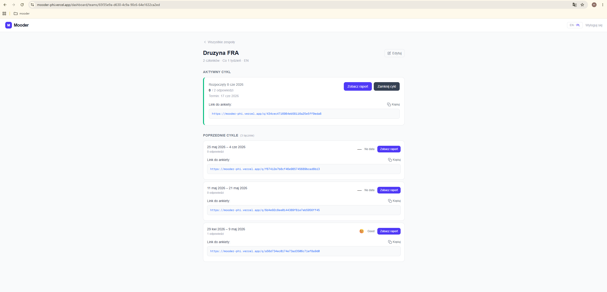
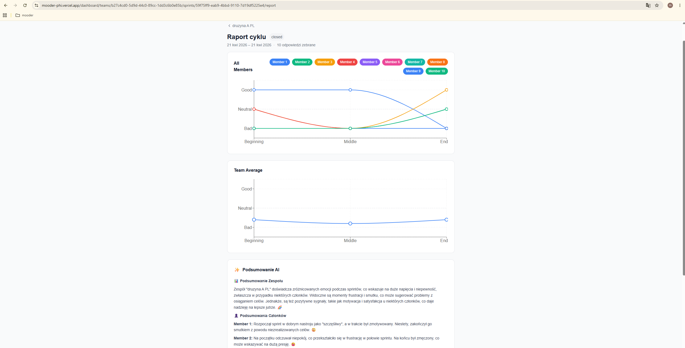
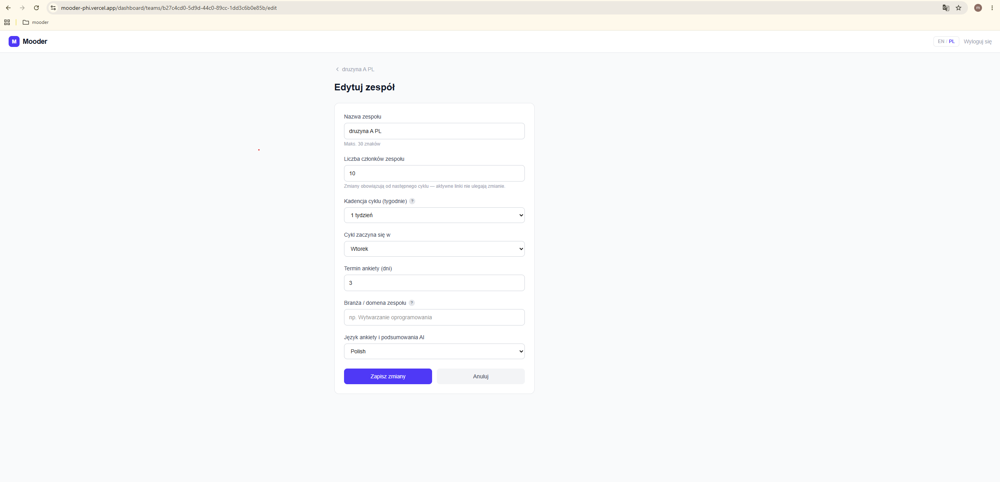
AI Daily Journal
Telegram-first journaling coach for tech professionals working toward a defined 12-month goal. The user chats with a bot daily; the system remembers their goal, values and prior entries, then asks pointed follow-up questions instead of accepting shallow answers. A set of 13 modular n8n workflows handles onboarding, daily reminders, journal capture, memory retrieval, goal updates, weekly processing and monthly summaries. Weekly recaps don't just list events — they call out rhythm patterns, name what got done, and flag the commitments that slipped.


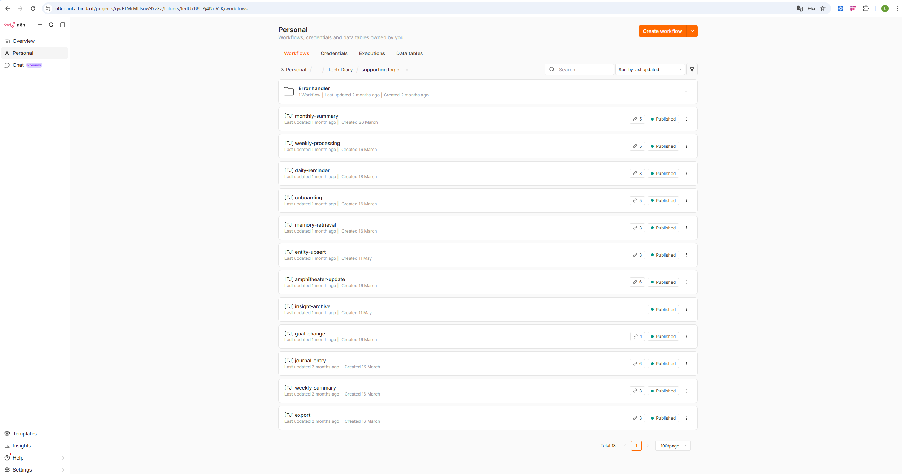
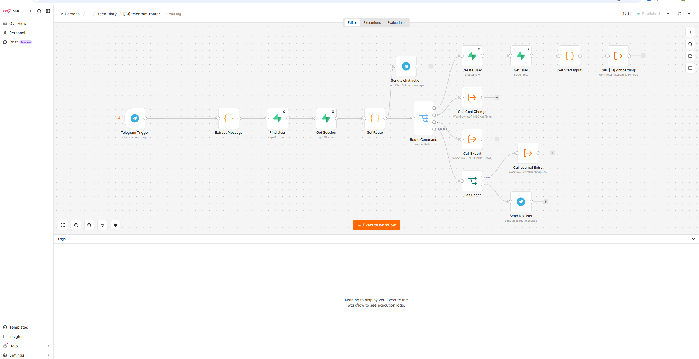
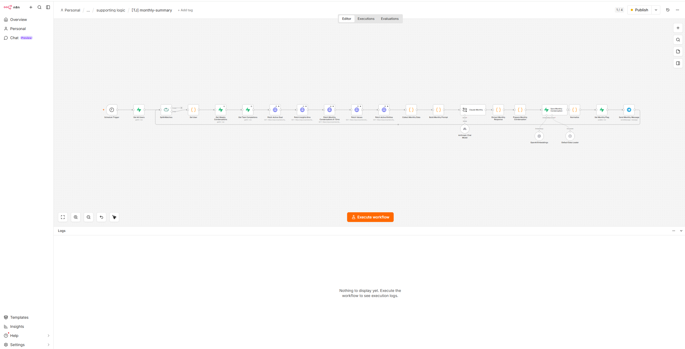
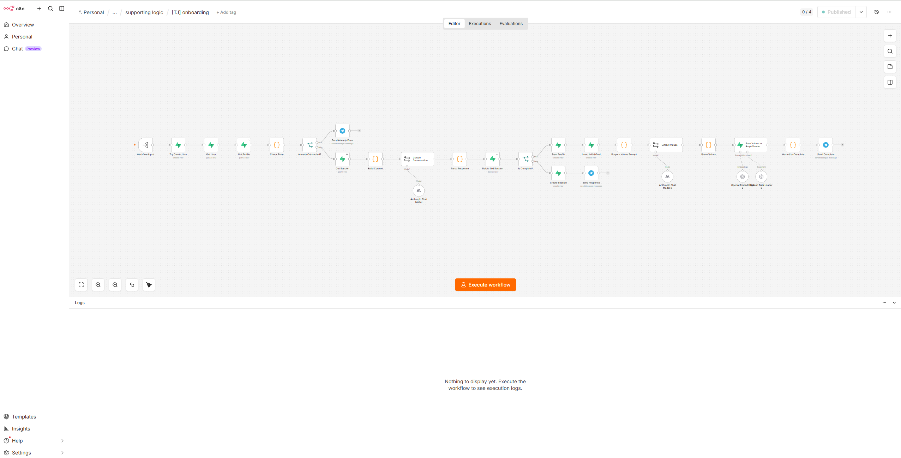
n8n Automation Library
Production-grade workflows running on a self-hosted n8n. Three examples: an Allegro marketplace monitor that pages through new offers, filters in JS and pushes alerts to Telegram while logging to Google Sheets; a multi-stage lead generation pipeline with scoring and branching; and a multimodal Telegram assistant for a real estate office that handles voice, image and text input through an AI agent. Built for small and mid-sized businesses where each workflow is wired against real APIs.
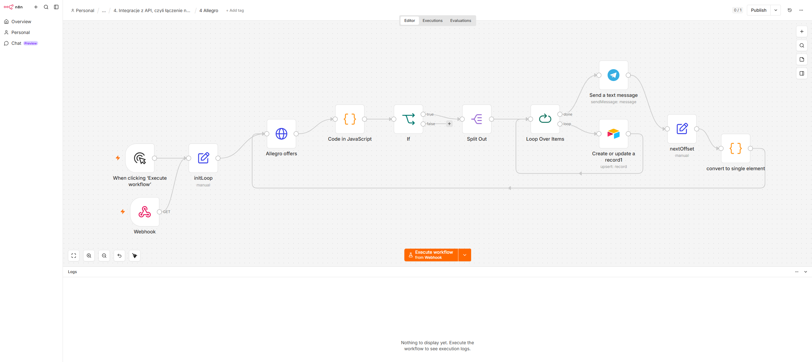
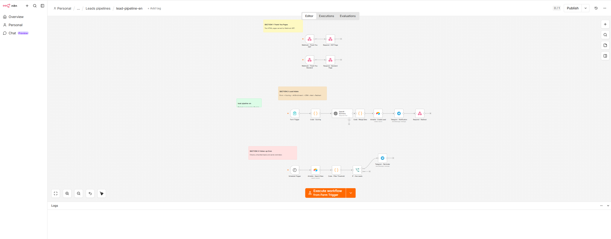
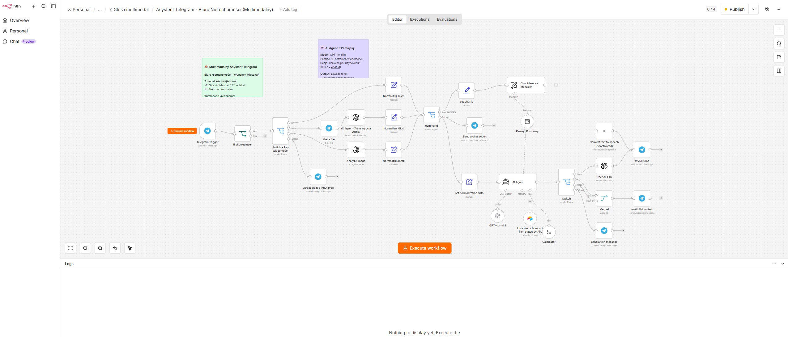